推測統計（編集中）
この章では、手元のデータが調査したい対象（母集団）全体の情報を含んでいないときに、手元のデータから母集団の特徴や性質を推測する方法を学びます。
このことを推測統計といいます。
まずは、推測統計とは何か？を理解してから、具体的な手法を学んでいきましょう。
データはこれまで通り、はじめにで説明している学食の売り上げデータを使っていきます。それぞれの変数が何を表しているのかなどは、そちらを参照してください。
ちなみに、この章の内容を深く理解するためには確率の知識が必要不可欠です。この文章では実践に重きを置いているため確率には触れていませんが、統計学入門の復習をしたり、より詳しく理解したい方は推薦図書に挙げているような『コア・テキスト 統計学』や『統計学入門』といった、学部中級レベルの統計の教科書を読んでみるとよいでしょう。
推測統計とは？
推測統計とは？セクションを見る（クリックで開閉）
そもそもデータ分析をする理由に立ち返ってみます。当たり前ですが、データ分析の目的は、データを使って何かしらの問題を解決したり、現状を改善したりすることです。
私たちは、現在学食の売上向上プロジェクトに参加しています。学食の売上向上という目標のためには、キャンペーンを打ち出すのが良いのか、広告を出すのが良いのか、営業時間を変更するのが良いのか、頻繁に新メニューを開発するのが良いのか、そして、それぞれの施策はどれほど売上向上に寄与するのか、を知りたいのです。
そのためには、母集団の情報を知る必要があります。学食の売上向上プロジェクトにおいては、学食を利用する可能性があるすべての人の情報です。母集団全体の情報を知ることができれば、例えば、実際に広告を出したときにどの程度売り上げが変化したのかを測ることができます。
母集団のすべての対象を調査することを全数調査と呼びます。
しかし、現実には母集団全体の情報を手に入れられるケースはほとんどありません。そこで、多くの場合、母集団から適切に抽出（サンプリング）した標本（データ）を用いて、母集団の情報を推測しようとします。
このように、標本から母集団の情報を推測することを推測統計と言います。
推測統計には、大きく分けて統計的推定と仮説検定の2つの方法があります。
統計的推定
母集団の統計量（平均や分散など）を、データから統計的に推測することを指します。
例えば、
- 手元のデータでは1回あたりの売り上げ平均が500円だったので、母集団の1回あたりの売り上げ平均も500円だろうと推測する。
- 手元のデータでは購入者の男性割合が \(55\%\) だったので、母集団の男性割合は \(54 \sim 56\%\) だろうと推測する。
こういった推測が統計的推定です。
推定には、1つの値で推定する点推定と、ある程度の幅をもって推定する区間推定があります。
仮説検定
母集団に関する仮説が成り立つか否かを、統計的な手続きを踏んで、データから判断することを指します。
例えば、
- 木曜日より火曜日の方が売り上げが大きいかどうか
- ある広告を出すことによって売り上げが変化するかどうか
こういった仮説を検証する手続きが仮説検定です。
サンプリングと標本の代表性
推定をするにしても、仮説検定をするにしても、標本が母集団の情報を正しく反映している（標本に代表性がある）かどうかが重要なポイントになります。
この重要性は、代表性がないケースを想像すると分かりやすいでしょう。
例えば、学食を利用する可能性があるすべての人を母集団として想定しているにもかかわらず、手元には経済学部の教員の購入データしかないとします。
学食は主に学生が利用することが多いでしょうから、母集団の平均年齢を推定したいときに、手元のデータの平均年齢を母集団の平均年齢と見なすことはできません。
また、学生の行動は時間割に左右されていて、ほとんどの学生が昼休みに学食を利用するのに対し、教員は混雑を避けて昼休み前後に利用時間をずらす傾向があるかもしれません。この場合、手元のデータの利用時間のピークを母集団の利用時間のピークとは見なせません。
さらに、学生と教員では予算にも差があるかもしれません。例えば学生は1食あたり400円以内に収めたいと考えている一方、教員は1食あたり600円までは使って良いと考えているかもしれません。この予算の差は1回あたりの購入金額に表れる可能性があるため、データから得られた平均購入金額を、母集団の平均購入金額と見なすことは難しいでしょう。
このような誤った推測を避けるために、標本が代表性をもつようにバランスよくサンプリングする必要があるのです。
逆に言うと、標本が代表性をもっていさえすれば、標本平均を母集団の平均だと見なしたり、標本分散を母集団の分散だと見なすことが可能です。
母集団の情報を推測するために使う数値（例えば、母集団の平均を推測するために用いるデータの標本平均のこと）を推定量と呼びます。
ランダムサンプリング
標本が代表性をもつようにバランスよくサンプリングする方法がランダムサンプリング（無作為抽出）です。
ランダムサンプリングは、母集団に含まれる調査対象のそれぞれが、標本として抽出される可能性を等しくしたうえで標本を選ぶ方法です。
例えば、学食を利用する可能性があるすべての人に \(1/100\) の確率で当たる（標本として抽出される）くじを引いてもらうようなイメージです。
ランダムサンプリングを行うことで、母集団の情報をバランス良く反映した標本を作ることができます。
代表性のある標本を作ることができたら、標本から得られた数値を推定量にすることができます。
ただし、母集団の情報をすべて集めているわけではない以上、推定量には必ず誤差が生じます。推測をする際には、この誤差も考慮に入れる必要があります。
標準誤差
母集団の情報を推測する際に用いる推定量のばらつきを標準誤差（Standard error; SE）と呼びます。
言い換えると、標準誤差は推定量の標準偏差です。一般的には標本平均の標準偏差を意味します。
名前は似ていますが、標準偏差と標準誤差は別物なので注意しましょう。
標準誤差は推定の精度を表す指標で、標準誤差が小さいほど、推定量はばらつきが小さく推定の精度が高いことを示します。
データ\((x_{1}, \cdots, x_{n})\)を用いた標準誤差\(SE\)は、
\[ SE = \frac{s}{\sqrt{n}} = \frac{\sqrt{\frac{1}{1-n}\sum_{i=1}^{n}(x_{i} - \bar{x})^2}}{\sqrt{n}} \]
で求められます。つまり、不偏分散をサンプルサイズで割ったものの平方根です。
不偏分散については、記述統計（
.P関数と.S関数）を参照してください。
式を見て分かるように、\(SE\)の分母にはサンプルサイズが入っています。標本のサンプルサイズが大きくなると標準誤差は小さくなる、つまり、精度の高い推定ができるということです。
例えば、手元のデータは1万人の母集団からランダムサンプリングしたものであるとし、手元のデータから母集団の平均購入金額を推測するとします。
ランダムサンプリングを複数回行うケースを考えてみます。1回あたりのサンプルサイズが100人のとき、例えば最初の100人の平均購入金額は500円、2回目の100人の平均購入金額は530円、3回目の100人の平均購入金額は490円と、標本ごとに平均購入金額が大きく異なることもあるでしょう。
ところが、1回あたりのサンプルサイズが1000人だとすると、例えば最初の1000人の平均購入金額は501円、2回目の1000人の平均購入金額は502円、3回目の1000人の平均購入金額は499円と、標本ごとの平均購入金額はそこまで大きく変わらないと想像できます。
1回あたりのサンプルサイズが2000人、3000人、…と増えていけば、さらに平均購入金額のばらつきは小さくなっていき、十分大きなサンプルサイズを得ることができれば、母集団の真の平均購入金額をほぼ誤差なく推測することができるようになります。
これが、サンプルサイズが大きいと精度高く推測できるというイメージです。
標準誤差を考慮した棒グラフ
標準誤差を用いると、手元のデータで得られた統計量の精度はどの程度なのかを知ることができました。
この推定精度を考慮したグラフを作成することで、より深い洞察が得られる場合があります。
例えば、男女間で平均購入金額に差があるかを知りたい、気温によってよく購入される商品の違いがあるのかを知りたいなど、特にグループ間の平均に統計的に差があるかどうかを知りたいときにとても有用です。
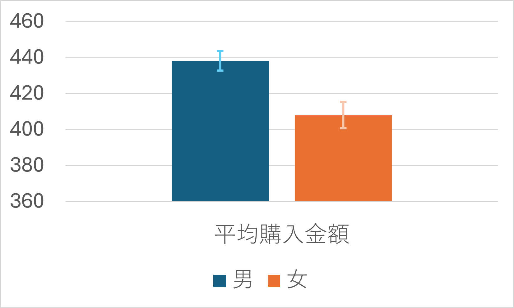
これは、標準誤差を考慮したうえで男女別に平均購入金額を棒グラフにしたものです。
棒グラフの高さは、男性、女性それぞれの平均購入金額を表します。
それぞれのバーには、バーの高さを中心にエラーバーと呼ばれるひげのようなものがついています。これが誤差範囲を表します。
データから算出された標本平均がバーの高さにあるならば、母集団の真の平均購入金額は、おおよそこの誤差範囲のどこかに分布しているだろう、という範囲を示しています。この区間を信頼区間と呼びます。
信頼区間を求めることは、推測統計のうち統計的推定に相当します。
信頼区間は確率をもって設定するため、どの程度の精度で推測したいかによってひげの長さは変わってきますが、一般的には95%信頼区間を求めることが多いです。
この95%という数字の解釈には、注意が必要です。
95％信頼区間は、真の母集団の平均が信頼区間内にある確率が95％だと言っているわけではありません。
正しくは、信頼区間が100個あるときに95個の信頼区間には真の母集団の平均が含まれることを表します。
ここまでの話をきちんと理解するためには、確率を勉強する必要がありますが、大事なことは、エラーバーがあることによって、標本から得られたグループ間の平均の差が、意味のある差なのか、それとも単なる偶然によって得られた差なのかをざっくりと知ることができるということです。
2つのグラフのエラーバーの範囲が重なっていなければ、グループ間の平均には統計的に差があると言えますし、エラーバーの範囲がほとんど重なっていれば、グループ間の平均に統計的な差があるとは言えないことになります。
エラーバー付棒グラフを作れるようになると、さまざまな分析が可能になります。例えば
- 昼と夜で売上金額が変化するのかを知ることができる
- 曜日によって利用者の平均年齢が変化するのかを知ることができる
- 打ち出した広告に効果があったのかを検証することができる
ランダムサンプリングされたデータと、標準誤差の知識があれば、工夫次第で大抵の疑問に答えることができます。少し難しい話ではありますが、ぜひ使い方をマスターしましょう。
Excelで標準誤差を考慮した棒グラフを作る
Excelでエラーバー付棒グラフを作るには、まず、グループ別にデータを整理する必要があります。
いくつか方法はありますが、グループごとにデータを分割すると分かりやすいでしょう。
ここでは、男女で平均購入金額の差があるかどうかを分析していきます。
データ分割方法
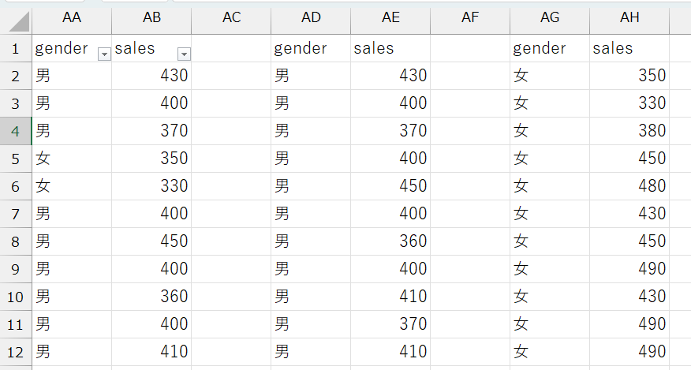
gender変数でフィルタをかけ、男性のデータのみを表示- グループを規定する変数でフィルタをかけるので、例えば、商品別に分けるなら
item変数でフィルタをかける
- グループを規定する変数でフィルタをかけるので、例えば、商品別に分けるなら
- フィルタリングされたデータをすべてコピーし、適当なところにペーストする
- 女性についても1と2を行う
男女別にデータを分割できたら、以下のような表を作ります。
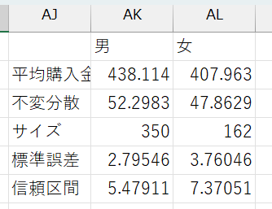
必要項目
- 男女別の平均
AVERAGE関数を使う
- 男女別の不偏分散
STDEV.S関数を使う
- 男女別のサンプルサイズ
COUNT関数を使うCOUNT関数はデータ範囲を指定して、= COUNT(データ範囲)のように使う
- 男女別の標準誤差
- 男女別に計算した平均、不偏分散、サンプルサイズを使って計算する
- セルに
= 不偏分散のセル番地/SQRT(サンプルサイズのセル番地)と入力 SQRT()関数は、（）内に指定した数値（計算式でもOK）の平方根を返す関数
- 男女別の信頼区間
- 男女別の標準誤差を使って計算
- 95％信頼区間：
= 1.96*標準誤差のセル番地と入力 - かける数字の大きさによってさまざまな信頼区間を計算可能
- 90％信頼区間：
= 1.64*標準誤差のセル番地 - 99％信頼区間：
= 2.58*標準誤差のセル番地
- 90％信頼区間：
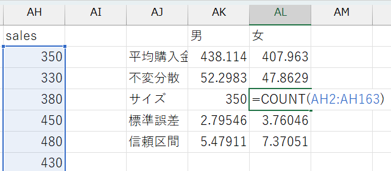 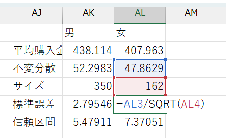 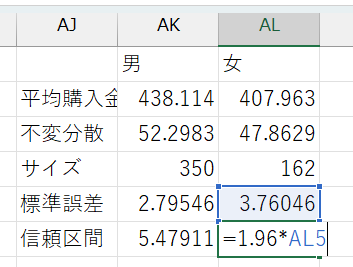
表ができたら、グループ名と各平均値のセルを選択し、棒グラフを作ります。できたグラフに、以下の手順でエラーバーを追加しましょう。
エラーバー追加手順
- グラフを選択し、グラフのデザイン→グラフ要素を追加→誤差範囲→その他の誤差範囲オプションの順に選択
- 誤差範囲の追加ウィンドウでエラーバーを追加したいグループ名を選択しOKをクリック
- 誤差範囲の書式設定メニューの誤差範囲からユーザー設定を選択
- ユーザー設定の誤差範囲ウィンドウで、正の誤差の値と負の誤差の値両方に計算した信頼区間のセル番地を指定
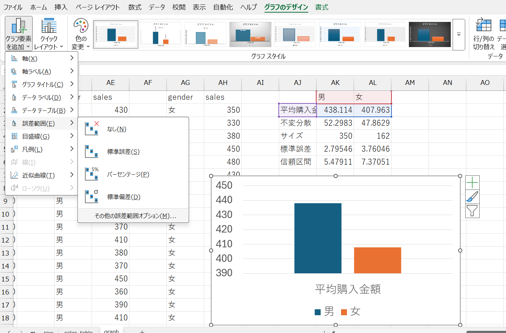 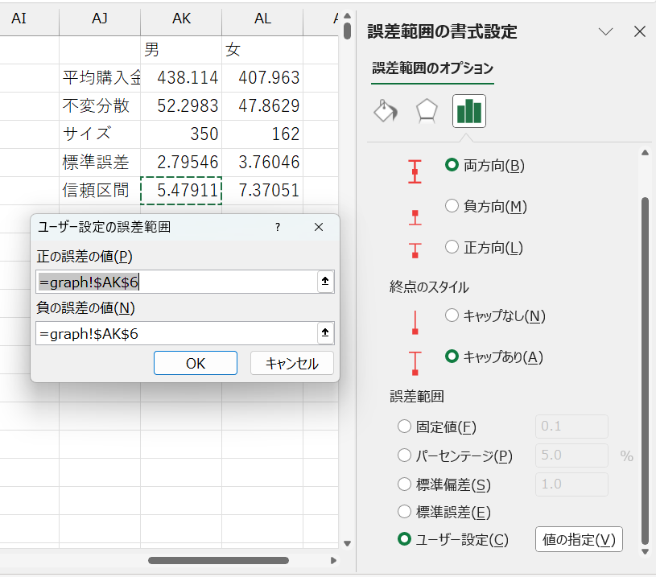
これで、エラーバー付棒グラフを作成できました。
男性のほうが女性より平均購入金額が高く、しかも、男女のエラーバーが重なる範囲がないため、真の平均購入金額も男女で異なる可能性が高いといえます。
仮説検定
仮説検定セクションを見る（クリックで開閉）
エラーバー付棒グラフを作成することで、グループ間で平均値に差があるかどうかをざっくりと知ることができました。
しかし、これはあくまでもざっくりとした分析です。
- 男女間で平均購入金額に統計的に意味がある差が存在するのではないか
- 広告によって売り上げは向上したのではないか
- 時間帯によって客層は異なるのではないか
こういった仮説にしっかりと答えるためには、何らかの客観的な基準で評価をすることが必要です。
データを利用して、このような仮説が正しいかどうかを客観的に判断することを仮説検定と呼びます。
例えば、男女間で平均購入金額に差があるのではないか、という仮説を検討します。
データから得られた平均購入金額は、男性が約438円、女性が約408円でした。
男性の方が30円多く購入しているから、男女間では平均購入金額に差があると言えるでしょうか？それとも、たまたま選ばれたデータによって偶然生じた差にすぎないのでしょうか？
仮に言えたとして、何円以上の差があれば男女間に差があると言えるでしょうか？
この問いに答えるために、まずは仮説を立てます。
統計的手法を用いて仮説検定を行う際には、仮説の立て方に少し独特な作法があります。
- × 男女間で平均購入金額に差がある
- 〇 男女間で平均購入金額に差はない
このように、差はないという仮説を立て、この仮説を統計的に否定する（棄却する）ことで、男女間で平均購入金額に差があるという仮説を支持します。
帰無仮説と対立仮説
- 帰無仮説：「差はない」という否定したい仮説のこと
- 否定することによって無に帰す仮説という意味
- 上の例では、「男女間で平均購入金額に差はない」という仮説のこと
- 対立仮説：「差がある」という支持したい仮説のこと
- 帰無仮説に対立するという意味
- 上の例では、「男女間で平均購入金額に差がある」という仮説のこと
- 対立仮説を「男性の方が女性より平均購入金額が高い」とすることもできる
- 対立仮説が「差がある」のとき：男性の方が平均購入金額が高いときと低いときの両方を支持する（両側検定という）
- 対立仮説が「男性の方が女性より平均購入金額が高い」のとき：男性の方が平均購入金額が高いという片側の差のみを支持する（片側検定という）
少し回りくどく見えるかもしれませんが、「差がある」ことを仮説にするのは意外と難しいのです。
大きな理由は、どの程度の大きさであれば「差がある」と言えるのか、客観的な指標で判断しづらいことです。10円の差を「差がある」と言う人もいれば、100円の差があっても「差はない」と言う人もいるかもしれません。
また、同じ差であっても、データの単位によってその大きさは違って見えます。
例えば、同じ「30円多い」と言っても、顧客の平均購入金額が100円のときと、10,000円のときとでは、意味が100倍違います。 100円に対する30円は大きな差に見えますが、10,000円に対する30円は、それこそ単なる誤差に見えます。
また、「差がある」ときには「差がある」と言うことができますが、「差が観察できない」ときには、「実際に差がない」のか、「実際には差があるけど観察できていないだけ」なのかを判断することが難しいという理由もあります。
そこで、 1. 差がないことが正しいと仮定し、 2. 得られたデータが「差がない」前提の下ではとても珍しい確率でしか得られないものだとしたら、 3. 差がないという前提を否定する、
という手順を踏むことで、「差がある」という仮説を支持していくのです。
Excelで仮説検定（t検定）をする
男女間での平均購入金額に差があるかどうかという仮説を例に、仮説検定の中でも、特に \(t\) 検定の手順を見ていきましょう。\(t\) 検定は、平均値の差があるかどうかを検定するときに使われる手法です。手順は以下の通りです。
- 有意水準を決める
- 仮説を立てる
- \(t\) 検定を実行する
- 結果を解釈する
1つひとつを詳しく見ていきましょう。
1. 有意水準を決める
まずは、どういう数字が出てきたら帰無仮説を棄却するか、最初に基準となる数字を決めておきます。
具体的には、男女間での平均購入金額に差がないという仮説が正しいときに、手元のデータの平均の差が \(X\) 円以上となる確率が \(\alpha\) 以下であれば、差がないという前提が間違っていたと判断するときの \(\alpha\) という数字です。
慣例的に \(\alpha\) は \(5\%\) とすることが多いです。
以降の手順で男女間での平均購入金額に差がないという仮説が正しいときに、手元のデータの平均の差が \(X\) 円以上となる確率を求めていくので、判断に主観が入らないよう、先に決めておく必要があります。
2. 仮説を立てる
次に、仮説を立てます。
先に述べたように、男女間で平均購入金額に差があるかどうかを検定するときは、男女間での平均購入金額に差がないという帰無仮説を立てます。
男性の平均購入金額を \(\overline{sales}_{男}\)、女性の平均購入金額を \(\overline{sales}_{女}\) とすると、帰無仮説 \(\mu_{0}\) は
\[ \mu_{0}: \bar{X} \equiv \overline{sales}_{男} - \overline{sales}_{女} = 0 \]
という式で表すことができます。
3. \(t\) 検定を実行する
ここからは、Excelのデータ分析ツールを使って検定を行っていきます。
データ分析ツールは、Excelの「データ」タブ内にある「データ分析」をクリックすると使えます。
「データ分析」が見つからないときは、先に「分析ツールアドイン」を追加する必要があります。
分析ツールアドインの追加
- 「ファイル」タブ→「オプション」を選択
- 「アドイン」→「設定」を選択
- 「分析ツール」にチェックを入れ、OKをクリック
- Excelを再起動する
次に、データ分析ツールに合わせてデータを加工します。
Excelで標準誤差を考慮した棒グラフを作ると同じように、男性のデータと女性のデータに分割しましょう。
分割ができたら、「分析ツール」を起動します。分析ツールから t 検定: 等分散を仮定した2標本による検定を選択し、必要なオプションを入力します。
t 検定のオプション
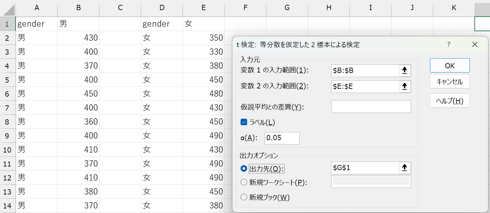
| 項目 | 内容 |
|---|---|
| 変数1の入力範囲 | 1つ目のデータの範囲 ここでは男性のデータの範囲 |
| 変数2の入力範囲 | 2つ目のデータの範囲 ここでは女性のデータの範囲 |
| 仮説平均との差異 | 帰無仮説で設定した差を入力（デフォルトは \(0\)） ここでは空欄または0 |
| ラベル | データ範囲にラベル（列名）が含まれるときはチェックを入れる |
| \(\alpha\) | 有意水準（デフォルトは \(0.05\)） |
| 出力オプション | 結果を出力したいセルを入力 ・出力先：同じシートに出力したいときにセルを指定 ・新規ワークシート：シート名を記入（空欄でもOK） ・新規ブック：ファイル名を記入（空欄でもOK） |
以上を入力してOKをクリックすると、指定した出力先に結果が表示されます。
4. 結果を解釈する
オプションが正しく入力されていれば、以下のような結果が表示されるはずです。
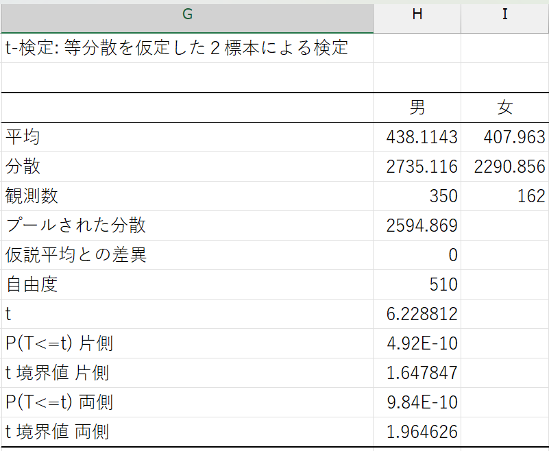
結果の表
| 項目 | 説明 |
|---|---|
| ラベル | データに設定した列名 |
| 平均 | 各データ（ここでは男女それぞれ）の平均値 |
| 分散 | 各データ（ここでは男女それぞれ）の不偏分散 |
| 観測数 | 各データ（ここでは男女それぞれ）のサンプルサイズ |
| プールされた分散 | 割愛 |
| 仮説平均との差異 | 仮説平均との差異に設定した値（ここでは0） |
| 自由度 | 割愛 |
| t | t値と呼ばれ、各データの差（ここでは男女間の差）を評価する値 この値が大きいほど各データの差（ここでは男女間の差）が大きいことを示す |
| P(T >= t) 片側 | 片側検定（対立仮説が「男性の方が女性より平均購入金額が高い」あるいは「男性の方が女性より平均購入金額が低い」）の場合の \(p\) 値（\(p\) 値については後述） |
| t 境界値 片側 | 片側検定の場合の棄却限界値 t値がこの値を超えると帰無仮説を棄却できる |
| P(T >= t) 両側 | 両側検定（対立仮説が「男女間で平均購入金額に差がある」）の場合の \(p\) 値 |
| t 境界値 両側 | 両側検定の場合の棄却限界値 |
いろいろと数値が出力されてややこしいかもしれませんが、注目すべきは P(T> =t)（\(p\) 値） です。
これは、「男女間の平均購入金額に差がない」という帰無仮説が正しいときに、手元のデータで観察される差が生じるのはどのくらい珍しいことなのかを表す確率です。
私たちは最初に、男女間での平均購入金額に差がないという仮説が正しいときに、手元のデータの平均の差が \(X\) 円以上となる確率が \(\alpha\) 以下であれば、差がないという前提が間違っていたと判断すると決めました。
よって、\(t\) 検定で得られた \(p\) 値と最初に決めた \(\alpha\) を比較し、\(p< \alpha\) であれば帰無仮説を棄却し、\(p> \alpha\) であれば帰無仮説を支持するという判断を行うことになります。
ここで得られた結果では、\(p\) 値は \(9.83813 \times 10^{-10} \left(=\frac{9.83813}{10^{10}}\right)\) という、非常に小さい値になっています。
これはつまり、「男女の購入金額の差が0円である」という帰無仮説が正しい場合に、手元のデータで観測されたような30円の差が生じる確率は、わずか \(0.0000000983813\%\) しかない、ということを意味します。
私たちは事前に、観測された差が偶然によって生じる確率（\(p\) 値）が \(5\%\) 以下であれば、帰無仮説を棄却する（\(=\)差がないという前提を否定する）と決めていました。
したがって、この場合は「男女の購入金額の差が0円である」という前提は成り立たないと判断し、男女の購入金額に統計的に有意な差があると結論づけることができます。
以上のように、仮説検定では偶然では説明できない差があるのかどうかを、データに基づいて判断することができます。特に \(p\) 値は、その差が偶然に生じる確率を数値で示してくれるため、データの意味を客観的に捉えるための強力なツールとなります。
特に、ここで学んだ\(t\) 検定（平均の差の検定）では、観測された差や効果が偶然によるものかどうかを判断することができます。しかし、実際のデータでは複数の要因が同時に影響している場合が多く、単純な比較だけでは不十分です。次に学ぶ回帰分析では、変数同士の関係（相関）を数式で表現し、データの傾向を把握したり、将来の値を予測したりすることが可能になります。
回帰分析
回帰分析セクションを見る（クリックで開閉）
このセクションでは、回帰分析について学んでいきます。
一般に回帰（regression）とは「興味のある変数（\(Y\)）の値を、他の変数（\(X\)）を用いて予測すること」を指します。
例えば、学食に来た人の性別（\(X\)）を手掛かりに、その人が何円の商品を購入するか（\(Y\)）を予測することが回帰分析にあたります。
このときに、手掛かりにする変数（\(X\)）を説明変数（または独立変数）と言い、予測する変数（\(Y\)）を被説明変数（または従属変数）と呼びます。
回帰分析は大きくノンパラメトリック回帰とパラメトリック回帰に分けられ、パラメトリック回帰の中で最もよく使われるのが線形回帰です。
ちなみに、パラメトリックという言葉は、「パラメータに関連する」や「パラメータで表される」という意味を持ち、統計学では特に分析の際にパラメータの値を仮定することを指します。つまり、\(Y\)を\(X\)で予測するときに、\(Y\)が\(X\)の関数として表されることを仮定するのがパラメトリック回帰、関数形を仮定しないのがノンパラメトリック回帰です。
以降では、ノンパラメトリック回帰と線形回帰について説明し、データを用いた予測方法を学んでいきます。
ノンパラメトリック回帰
ここでは、男女別に売上金額を予測することを考えます。また、十分多くの人たちについて、各個人の購入金額\(Y\)と性別\(X\)のペア \((Y, X)\) がランダムサンプリングした標本として観察できることを前提とします。
ノンパラメトリック回帰の場合は、まずサンプルを男女に分割し、男性の売上金額、女性の売上金額をそれぞれ予測します。
予測を行う際には、正確に予測することを目指します。
正確に予測できている状態とは、予測誤差（prediction error）が最小である状態です。
予測誤差は、\(X\)によって予測した\(Y\)の値、\(\hat{Y}\)と、実際の\(Y\)の値の差として表されます。
私たちの手元に、\(\{Y_{1}, Y_{2}, \dots, Y_{i}, \dots, Y_{N}\}\)という\(N\)個のデータがあるとき、予測誤差を\(\varepsilon_{i}\)とすると、予測誤差のデータは以下のようになります。
\[ \varepsilon_{1} = Y_{1}- \hat{Y}, \varepsilon_{2} = Y_{2}- \hat{Y}, \dots, \varepsilon_{i} = Y_{i}- \hat{Y}, \dots, \varepsilon_{N} = Y_{N}- \hat{Y} \]
予測誤差は正負どちらの値も取りうるので、平均二乗誤差（MSE: Mean Squared Error）を使って予測誤差全体の大きさを評価します。
\[ MSE = \frac{1}{N}(\varepsilon_{1}^{2} + \varepsilon_{2}^{2} + \cdots + \varepsilon_{i}^{2} + \cdots + \varepsilon_{N}^{2}) = \frac{1}{N}\sum_{i = 1}^{N}(Y_{i}- \hat{Y})^{2} \]
このMSEを最小にするような予測値\(\hat{Y}\)を考えれば、精度の高い予測ができることになります。
結果だけお伝えすると、\(\hat{Y} = \bar{Y}\)（\(Y\)の平均値）のときに、MSEが最小になります。 （興味がある方は、以下のMSEの計算式を参照してください。）
MSEの計算式を見る（クリックで開閉）
\[ \begin{align} MSE &= \frac{1}{N}\sum_{i = 1}^{N}(Y_{i}- \hat{Y})^{2} \\ &= \frac{1}{N}\left(\sum_{i = 1}^{N}Y_{i}^{2}- 2\sum_{i = 1}^{N}Y_{i}\hat{Y} + \sum_{i = 1}^{N}\hat{Y}^{2}\right) \\ &= \frac{1}{N}\sum_{i = 1}^{N}Y_{i}^{2}- 2\hat{Y}\times\frac{1}{N}\sum_{i = 1}^{N}Y_{i} + \frac{1}{N}\times N\hat{Y}^{2} \\ &= \frac{1}{N}\sum_{i = 1}^{N}Y_{i}^{2}- 2\hat{Y}\times\frac{1}{N}\sum_{i = 1}^{N}Y_{i} + \hat{Y}^{2} \\ &= \left(\frac{1}{N}\sum_{i = 1}^{N}Y_{i}\right)^{2}- 2\hat{Y}\times\frac{1}{N}\sum_{i = 1}^{N}Y_{i} + \hat{Y}^{2} +\frac{1}{N}\sum_{i = 1}^{N}Y_{i}^{2} - \left(\frac{1}{N}\sum_{i = 1}^{N}Y_{i}\right)^{2}\\ &= \left(\frac{1}{N}\sum_{i = 1}^{N}Y_{i} - \hat{Y}\right)^{2} + \frac{1}{N}\sum_{i = 1}^{N}Y_{i}^{2} - \left(\frac{1}{N}\sum_{i = 1}^{N}Y_{i}\right)^{2}\\ \end{align} \]
よって、\(\hat{Y} = \frac{1}{N}\sum_{i = 1}^{N}Y_{i} \equiv \bar{Y}\)のときMSEは最小値をとる。
つまり、男性の購入金額の予測値は男性の購入金額の標本平均、女性の購入金額の予測値は女性の購入金額の標本平均となります。
これは、説明変数\(X\)のカテゴリ数が多くなっても同じです。
例えば、年齢を説明変数\(X\)として被説明変数\(Y\)である購入金額を予測したいときは、年齢ごとにサンプルを分割し、サンプルごとに購入金額の標本平均を計算します。
したがって、ノンパラメトリック回帰は、以下の手順で行います。
- データから、説明変数\(X\)と被説明変数\(Y\)（ここでは、各個人の性別と売上金額）をペアにしたサンプルを抽出する。
- 説明変数\(X\)の値に基づいて、サンプルを複数のグループに分割する（ここでは、男性グループと女性グループに分割する）。
- 各グループ内で平均値\(\bar{Y}\)を計算し、その結果を予測値とする。
このような回帰分析の方法を、予測値に関数形を課さないという意味で、ノンパラメトリック回帰と言います。
Excelを使ったノンパラメトリック回帰
それでは、男女それぞれの売上金額をノンパラメトリック回帰に基づいて予測してみましょう。
gender変数でフィルタをかけ、男女別にsales変数を分割し、AVERAGE関数を使って、男女それぞれの平均売上金額を計算すればそれでOKです。
（関数の使い方はExcelで標準誤差を考慮した棒グラフを作るを参照してください。）
あるいは、AVERAGEIFS関数を使って、生のデータから男女それぞれの売上金額を抽出し、平均を計算しても良いです。AVERAGEIFS関数は、COUNTIFS関数とほとんど同じように使えます。
AVERAGEIFS関数
複数の条件を満たすすべてのセルの平均を返す関数です。
AVERAGEIFS(平均範囲, 条件範囲 1, 条件 1, [条件範囲 2, 条件 2], ...)
（例）男性の平均売上金額：= AVERAGEIFS($B:$B, $A:$A, "男")
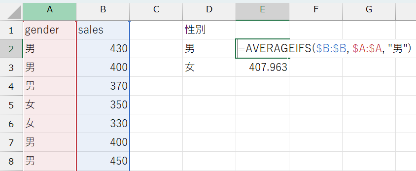
データから得られた平均購入金額は、男性が約438円、女性が約408円でした。これらの値が、それぞれの性別における売上金額の予測値として用いられます。
ノンパラメトリック回帰の注意点
ノンパラメトリック回帰が可能な場合には、サンプルを分割して平均を計算するだけで、十分有用な予測値を得られます。
しかし、ノンパラメトリック回帰には弱点もあります。
第一に、ノンパラメトリック回帰で十分な予測精度を担保するためには、それなりのサンプルサイズが必要です。
一般には、サンプルサイズが30以上であれば比較的安定した結果を得られると言われていますので、男女それぞれ30人ずつのデータを集められればとりあえず基準はクリアしたことになります。
この基準は、説明変数\(X\)に多くの項目が含まれる場合、さらにシビアになります。
例えば、説明変数\(X\)に性別（男/女）と職位（学生/職員）の両方を含むとすると、\(2 \times 2 = 4\)グループにサンプルを分割するので、それぞれ30以上のサンプルサイズが必要、全体として120以上のサンプルサイズが必要になってしまいます。
このように、サンプルを細かく分割すると、1つ1つのグループのサンプルサイズが小さくなり、予測精度が下がる要因になってしまいます。
第二に、事前に説明変数\(X\)と被説明変数\(Y\)の関係が想定されるときに、全体の傾向が見づらいことがあります。
例えば、年齢と売上金額の関係を考えてみます。若い人の方がたくさん食べられるので売上金額は高い傾向にあるかもしれないし、年齢を重ねた人の方が金銭的に余裕があって売上金額が高い傾向にあるかもしれません。
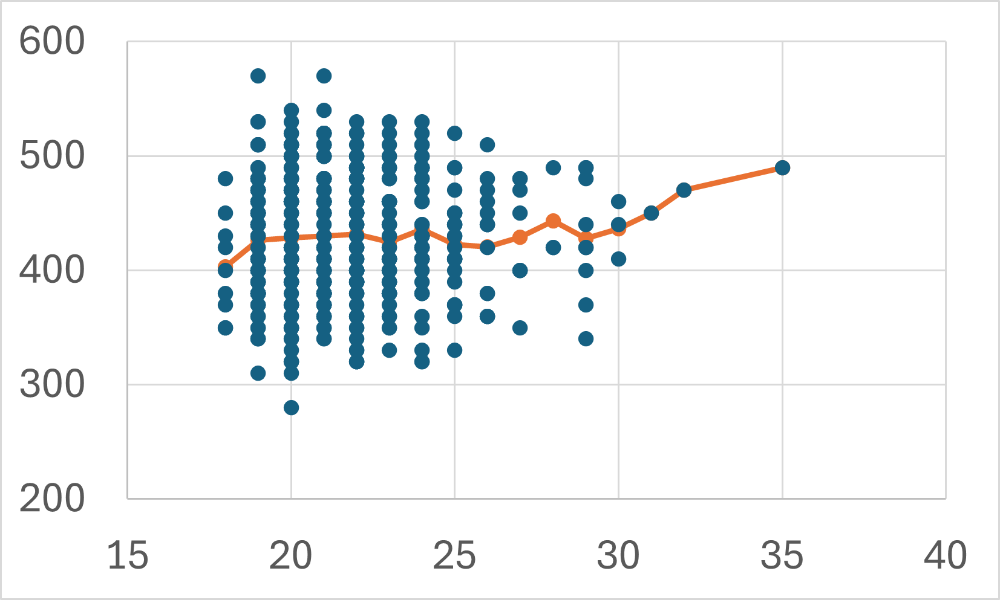
上図は年齢ごとに売上金額をプロットしたものと、それをノンパラメトリック回帰した結果を表しています。
「1年歳をとることで売上金額が何円上がるか（下がるか）」という全体的な傾向をノンパラメトリック回帰の結果から解釈することは難しいでしょう。
横軸の取りうる値がもっと細かくなれば、回帰曲線自体がよりギザギザとなって見づらくなることもありますし、説明変数が手元のデータにないの値（ここでは、例えば15歳の人や40歳の人など）をとるときの予測値を計算することもできません。
線形回帰
ノンパラメトリック回帰の注意点に挙げたような問題点に対処するために、説明変数\(X\)と被説明変数\(Y\)の関係になんらかの関数形を仮定する方法が、パラメトリック回帰です。
例えば、関数形を以下のように仮定することができます。
- \[ Y = \beta_{0} + \beta_{1} X \]
- \[ Y = \beta_{0} + \beta_{1} X + \beta_{2} X^{2} \]
- \[ Y = \frac{\beta}{X} \]
- \[ Y = \beta_{0} e^{\beta_{1} X} \]
特に、被説明変数\(Y\)は説明変数\(X\)の1次式であると仮定する方法を線形回帰（linear regression）といいます。
例えば、売上金額（sales）は気温（temp）の1次式であると仮定すると、売上金額は以下の式で表すことができます。
\[ sales = \beta_{0} + \beta_{1} \times temp + \varepsilon \]
例のように、説明変数が一つのときには特に単回帰式といい、説明変数が二つ以上の時には重回帰式といいます。
ここで、回帰式についていくつかの専門用語を整理しておきます。
\(Y = \beta_{0} + \beta_{1} X + \varepsilon\) のような説明変数\(X\)と被説明変数\(Y\)の関係式を回帰式（回帰式）と呼び、直線の切片\(\beta_{0}\)、直線の傾き\(\beta_{1}\)を回帰係数と呼びます。
線形回帰は、手元のデータ\((temp, sales)\)の組み合わせから、データの動きを最もよく表す直線の回帰係数\((\beta_{0}, \beta_{1})\)を見つける作業です。
データの動きを最もよく表す直線とは、（ノンパラメトリック回帰と同様に）予測誤差の少ない直線のことです。
ここでも、予測誤差は\(\varepsilon\)で表されるので、回帰係数\((\beta_{0}, \beta_{1})\)のもとで、回帰式 \(Y = \beta_{0} + \beta_{1} X + \varepsilon\) のMSEは以下の式で表されます。
\[ MSE = \frac{1}{n} \sum_{i=1}^{n} (Y_{i} - \beta_{0} - \beta_{1} X_{i})^{2} \]
この誤差を最小にする回帰係数の値\((\hat{\beta_{0}}, \hat{\beta_{1}})\)を、最小二乗推定量、あるいはOLS(ordinary least squares)推定量と呼びます。
具体的な導出過程は割愛しますが、OLS推定量は以下の式で求められます。
\[ \begin{align} \hat{\beta_{1}} &= \frac{\sum_{i=1}^{n}(Y_{i} - \bar{Y})(X_{i} - \bar{X})}{\sum_{i=1}^{n}(X_{i} - \bar{X})^{2}} \\ &= \frac{\sum_{i=1}^{n}(Y_{i} - \bar{Y})(X_{i} - \bar{X})/(n-1)}{\sum_{i=1}^{n}(X_{i} - \bar{X})^{2}/(n-1)} \\ &= \mathbf{\frac{XとYの標本共分散}{Xの標本分散}} \\ \hat{\beta_{0}} &= \bar{Y} - \hat{\beta_{1}}\bar{X} \end{align} \]
式を見ていただいて予想がつくかもしれませんが、\(\beta_{1}\)（傾きの係数）の方が大切です（\(\beta_{0}\)はおまけのようなものです）。
直線において、説明変数\(X\)と被説明変数\(Y\)が相関するかどうかを決めるのが傾きの係数だからです。
\(\beta_{1}\)がほとんど\(0\)のケースを考えます。 散布図と回帰曲線は、例えばこんな感じになります。
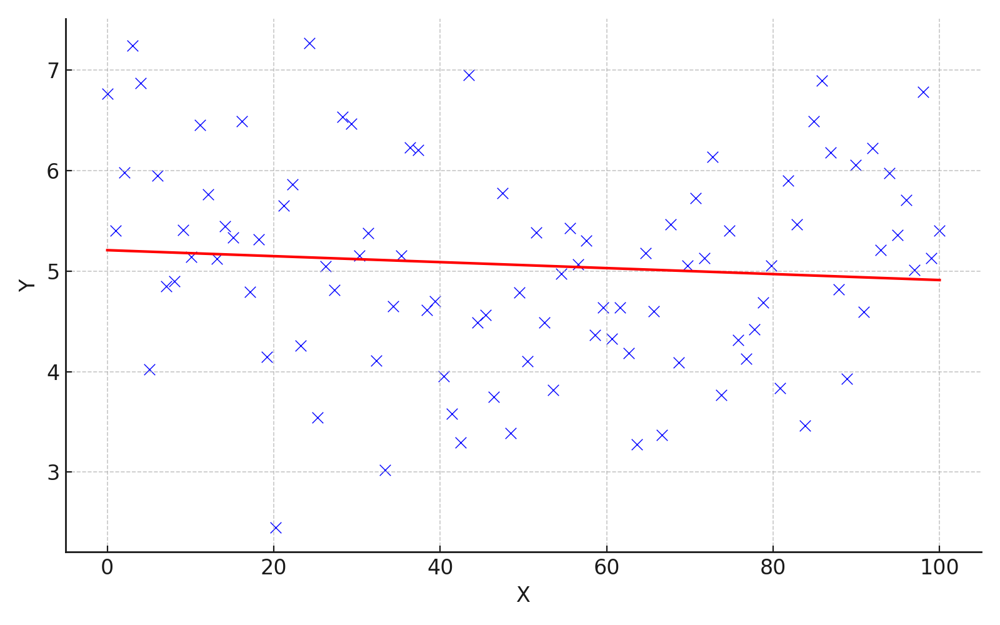
被説明変数\(Y\)の値が、説明変数\(X\)の値にかかわらず分布している、つまり、説明変数\(X\)と被説明変数\(Y\)が連動して動いていないことが読み取れると思います。
このような状態では、説明変数\(X\)から被説明変数\(Y\)の値を予測することはできません。
よって、ある変数を用いてほかの変数の値を予測したいときや、何か意味のある相関を見つけたいときは、傾きが\(0\)ではないことを確認する必要があるのです。
Excelで回帰分析をする
Excelで回帰分析をするとき、単回帰分析（説明変数\(X\)が1つだけ）の場合は2通りの方法があります。
1. 散布図に近似曲線を追加する
- 散布図を作る（記述統計（散布図）を参照）
- 散布図を選択し、「デザイン」タブ→「グラフ要素を追加」→「近似曲線」→「線形」の順に選択
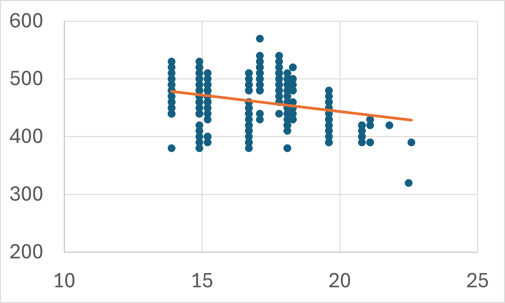
単回帰分析であれば、散布図に近似曲線を追加するだけで、回帰係数を求めることができます。
しかし、傾きが\(0\)ではないかどうかを確認したいときには、グラフだけでは不十分です。 また、説明変数\(X\)が2つ以上の場合は回帰曲線を図示することはできません。 その場合は、次のセクションで説明される方法で分析します。
2. 分析ツールを使う
傾きが\(0\)ではないかどうかを確認したいとき、説明変数\(X\)が2つ以上の場合は、仮説検定でも使った分析ツールを使います。
分析ツールの追加方法は分析ツールアドインの追加を参照してください。
\[ sales = \beta_{0} + \beta_{1} \times temp + \varepsilon \]
この回帰式の係数を推定してみます。
- 「データ」タブ→「データ分析」の順に選択して分析ツールを開く
- 「回帰分析」を選択
- 必要な項目を記入
| 項目 | 内容 |
|---|---|
| 入力\(Y\)範囲 | 被説明変数のデータ範囲を入力 |
| 入力\(X\)範囲 | 説明変数のデータ範囲を入力 |
| ラベルの指定 | 1行目に変数名がある場合、「ラベル」にチェックを入れる |
| 出力オプションの指定 | 結果を出力したい場所を指定 |
| 一覧の入力先 | 入力した既存ワークシートのセルに結果が出力される |
| 新規ワークシート | 出力用の新しいワークシートが自動で作成される |
| 新規ブック | 出力用の新しいExcelブックが自動で作成される |
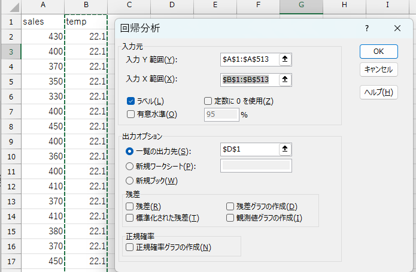
正しく入力されていれば、出力オプションで指定したセルに結果が出力されます。
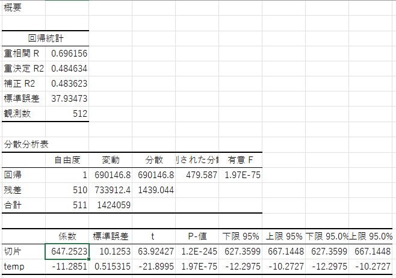
| 区分 | 項目 | 説明 |
|---|---|---|
| 概要 | 重相関 \(R\) | 説明変数と被説明変数の相関係数（複数の\(X\)がある場合でもまとめた指標） |
| 決定係数 \(R^2\) | 回帰式によって説明される\(Y\)の変動の割合（決定係数） | |
| 補正 \(R^2\) | 自由度調整済み決定係数（説明変数が多いと過大評価になるのを補正） | |
| 標準誤差 | 推定誤差の標準偏差（残差のばらつきの尺度） | |
| 観測数 | データのサンプル数（行数） | |
| 分散分析 | 回帰 | 回帰によって説明される分散に関する統計量（自由度, 分散など） |
| 残差 | 説明できなかった残差の分散 | |
| 合計 | 総平方和（回帰+残差） | |
| 分散比 | \(F\)値の計算に用いる（回帰分散 ÷ 残差分散） | |
| 有意 \(F\) | モデル全体の有意性の検定（\(p\)値） | |
| 係数表 | 切片 | 回帰式の切片（\(Y = \beta_{0} + \beta_{1}X\) の \(\beta_{0}\) 部分） |
| 説明変数名 | 各説明変数の名前（例：temp） |
|
| 係数 | 各説明変数の回帰係数（傾き\(\beta_{1}\)） | |
| 標準誤差 | 各係数の標準誤差（ばらつき） | |
| \(t\) 値 | 係数の有意性を検定するための統計量 | |
| \(P\)値 | \(t\)検定の\(p\)値。小さいほど係数が有意（例：\(< 0.05\)） | |
| 下限 \(95\%\) | 係数の95%信頼区間の下限 | |
| 上限 \(95\%\) | 係数の95%信頼区間の上限 |
たくさんの数値が出てきますが、重要なのは係数と\(P\) 値です。
係数は各説明変数の回帰係数（ここでは\(\beta_{1}\)）を表します。
回帰係数が\(-11.28\)であるということは、気温（temp）が一度上がると売上（sales）は\(-11.28\)円変化する、つまり、気温が一度上昇すると売上は\(11.28\)円下がるという関係になっていることが分かります。
一方、\(P\) 値はその回帰係数が統計的に\(0\)と異なると言えるかどうかを示します。
これは、回帰係数が\(0\)であるという帰無仮説に対する検定を行っていることを意味します。
説明変数が被説明変数の予測に有効であるためには、対応する回帰係数が\(0\)ではない、つまり統計的に有意である必要があります。
そのため、回帰分析を行う際は、仮説検定で学んだ考え方に基づき、回帰係数が統計的に\(0\)と異なることを判断するのが一般的です。
詳しくは、Excelで仮説検定（t検定）をするを参照してください。
分析者は、事前に有意水準を設定し、\(P\) 値がその水準よりも小さいときに、回帰係数は有意に\(0\)と異なると結論付けます。
例えば、有意水準を\(5\%\)（\(=
0.05\)）とした場合、tempの回帰係数について\(P値 = 1.96773E-75 (=
1.96773×\frac{1}{10^{75}}) < 0.05\)
なので、tempの回帰係数は有意に\(0\)と異なると言えます。
よって、tempはsalesの予測に有効な説明変数だと判断され、以下のような回帰式を使って売上を予測できます。
\[ sales = 647.2523251 -11.28513304 \times temp \]
このに、実際の気温の値を代入することで、その日の売上を予測することができます。
例えば、気温が22度のとき、売上金額は\(647.2523251 -11.28513304 \times 22=398.97939822\)円であると予測できます。
ダミー変数を使った線形回帰
先ほどの例では、tempのような連続変数（ある値と次の値の間に無限の中間値を持つ変数）を説明変数とする回帰分析を扱いました。
しかし、実際の分析では、性別や職種など、数値ではないカテゴリ変数を扱う場面も多くあります。 仮説検定の例のように、男女間での売上金額の差を分析したいような場合です。
このようなときは、各カテゴリに数値を対応させることで、それを説明変数として回帰式に組み込むことができます。 例えば、性別を男性\(=1\)、女性\(=0\)のように変換します。
特に、0と1の2値しかとらない変数をダミー変数と呼びます。
ダミー変数の係数の解釈
ダミー変数を回帰式に入れると、その係数は基準となるカテゴリ（0が割り当てられたカテゴリ）との差を表すようになります。
例えば、男性\(=1\)、女性\(=0\)をとるようなmale変数を考えると、
\[ sales = \beta_{0} + \beta_{1} \times male + \varepsilon \]
というモデルでは、
male\(= 1\)のとき（男性）、予測されるsalesの値は\(\beta_{0} + \beta_{1}\)male\(= 0\)のとき（女性）、予測されるsalesの値は\(\beta_{0}\)
となり、\(\beta_{1}\)は男性と女性の平均的な差（男性の売上金額は女性と比較して平均的に\(\beta_{1}\)円異なる）を示す係数になります。
このように、ダミー変数の係数は基準カテゴリとの比較として解釈します。
Excelでダミー変数を作る
\(\{男, 男, 男, 女, 女, 男, ...\}\)のように文字列でデータが入力されている場合、各カテゴリに数値を割り当て、男性\(=1\)、女性\(=0\)となるようなダミー変数を作ります。
ExcelではIF関数を使います。
IF関数
IF(条件, 真の場合の値, 偽の場合の値)
（例）gender変数が男のときに\(1\)、女のときに\(0\)を割り当てる:
IF(A2="男", 1, 0)
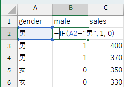
このようにカテゴリと数値を対応させることで、連続変数と同じように回帰分析ができるようになります。
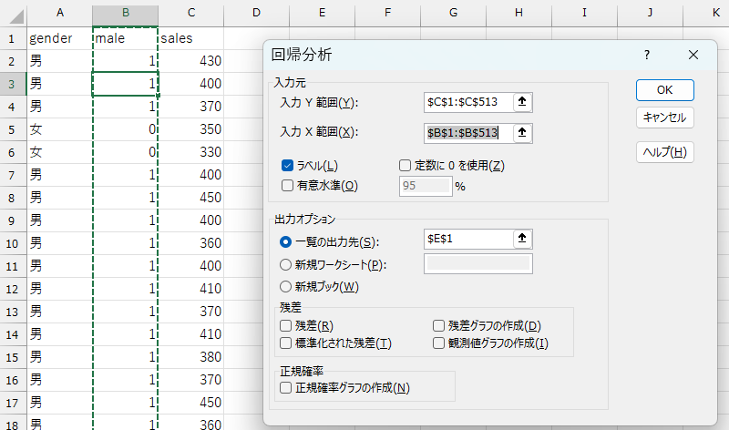
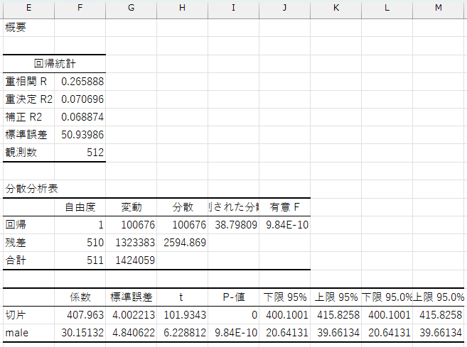
maleの回帰係数は\(30.15\)、\(P\)値は\(9.84E-10 (= 9.84×\frac{1}{10^{10}}) <
0.05\)なので、性別ダミーは売上予測に有効な変数であり、以下のような回帰式を使って売上を予測できます。
\[ sales = 407.963 +30.15132275 \times male \]
これにより、客が男性のとき（male\(= 1\)）の売上金額の予測値は\(407.963
+30.15132275=438.11432275\)円、客が女性のとき（male\(= 0\)）の売上金額の予測値は\(407.963\)円になります。
重回帰分析
これまでは、説明変数が1つだけのケースを考えてきました。
売上金額が気温によって変化するのは、恐らく寒いときに温かいものが食べたくなることが理由の1つでしょう。
しかし、売上金額が変化する要因はほかにも考えられます。
- 男性の方が女性よりもたくさん食べるので、売上金額は大きくなるかもしれない（実際に、性別ダミーは正に有意だったので、予測に有効な変数であることが分かりました）。
- 学生よりも職員の方が予算が潤沢なので、売上金額は大きくなるかもしれない。
- 逆に、学生の方が食べ盛りなので、売上金額は大きくなるかもしれない。
- 学食で割引キャンペーンなどの施策を行っている日は、売上金額は大きくなるかもしれない。
このように、考えようと思えば、いくらでも売上金額と相関していそうな要因を挙げることができます。
ここでは、2つ以上の説明変数を用いて売上金額を予測していきます。
2つ以上の説明変数を使った線形回帰のことを、重回帰分析と呼びます。
例えば、売上金額（sales）が気温（temp）と職位（position）によって予測されるモデルを仮定します。
現在職位（position）変数は文字列のデータになっているので、先ほどの性別ダミーと同様に、学生\(=1\)、職員\(=0\)となるようなダミー変数を作っておきましょう（student変数とします）。
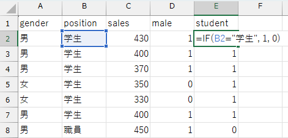
このとき、売上金額は以下の式で表すことができます。
\[ sales = \beta_{0} + \beta_{1} \times temp + \beta_{2} \times student + \varepsilon \qquad \text{（1）} \]
回帰式を一般的な形式に書き直すと、重回帰分析は\(d\)（\(\geq 2\)）個の説明変数\(X\)を用い、以下の回帰式の回帰係数 \((\beta_{0}, \beta_{1}, \beta_{2}, \dots, \beta_{d})\) を求める手法だと言えます。
\[ Y = \beta_{0} + \beta_{1} X_{1} + \beta_{2} X_{2} + \cdots + \beta_{d} X_{d} + \varepsilon \]
このとき、重回帰分析のOLS推定量は、以下のMSEを最小化する \((\beta_{0}, \beta_{1}, \beta_{2}, \dots, \beta_{d})\) の値として定義されます（具体的な関数形は省略します）。
\[ MSE = \frac{1}{n}\sum_{i=1}^{n}(Y_{i} - \beta_{0} - \beta_{1} X_{1i} - \beta_{2} X_{2i} - \cdots - \beta_{di} X_{di}) \]
回帰係数を求めるには、分析ツールを使うの方法を使います。
（1）式を分析するときの例では、以下のように必要な項目を入力します。
- 「データ」タブ→「データ分析」の順に選択して分析ツールを開く
- 「回帰分析」を選択
- 必要な項目を入力
| 項目 | 内容 |
|---|---|
| 入力\(Y\)範囲 | sales変数のデータ範囲を入力 |
| 入力\(X\)範囲 | temp変数とstudent変数のデータ範囲を入力 |
| ラベルの指定 | 1行目に変数名がある場合、「ラベル」にチェックを入れる |
| 出力オプションの指定 | 結果を出力したい場所を指定 |
| 一覧の入力先 | 入力した既存ワークシートのセルに結果が出力される |
| 新規ワークシート | 出力用の新しいワークシートが自動で作成される |
| 新規ブック | 出力用の新しいExcelブックが自動で作成される |
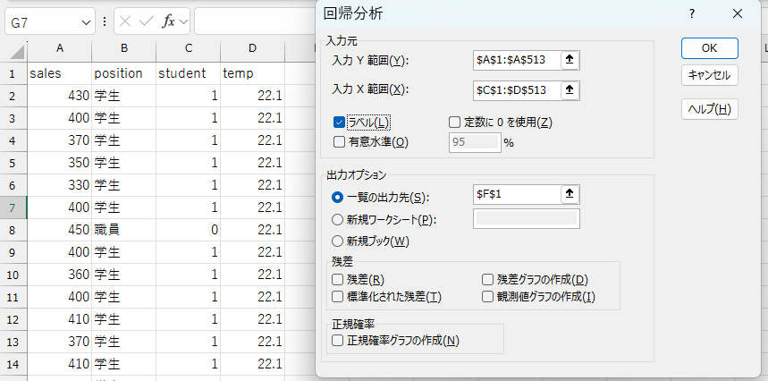
正しく入力されていれば、出力オプションで指定したセルに結果が出力されます。
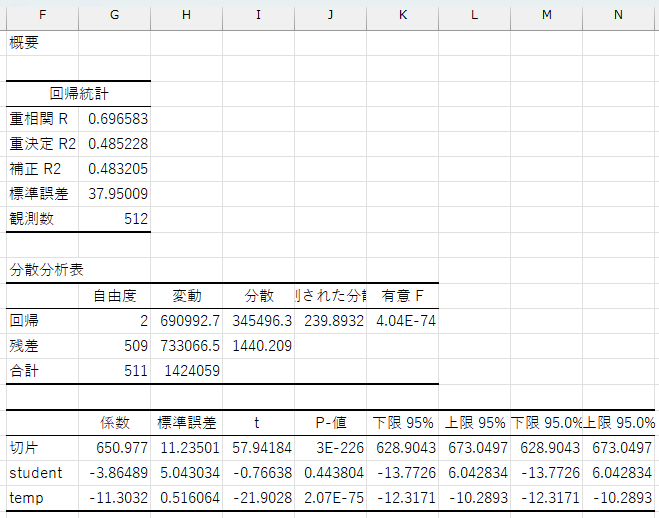
ここでも、係数とp値に注目します。
student変数の係数は\(-3.86\)、p値は\(0.44\)です。
ダミー変数の係数は基準カテゴリとの比較だと解釈できます。ここでは、職員（student\(=0\)）と比較して、学生（student\(=1\)）は\(3.86\)円平均購入金額が低いということを示しています。
ただし、p値が\(0.44\)と有意水準の\(0.05\)より大きいため、これは統計的に有意ではないと判断されます。
ちなみに、重回帰分析のパラメターは、他の条件を一定にしたもとで、その説明変数が1単位変化したときの被説明変数の平均的な変化の大きさを表します。
したがって、student変数の係数は、気温（temp）を一定にしたときに（気温が同じであれば）、職員と学生を比較したときに、学生の方が平均購入金額が\(-3.86\)円高い（つまり、\(3.86\)円低い）と解釈できます。
temp変数の係数は\(-11.3\)、p値は\(2.07\times
10^{-75}\)です。これはstudent変数を一定としたときに（学生同士、職員同士で比較した場合）、気温が1度上がると平均購入金額は\(-11.3\)円増加する（温が1度上がると平均購入金額は\(11.3\)円減少する）ことを示しています。この係数のp値は非常に小さいため、統計的に有意であると判断できます。
このように、重回帰分析を用いると、複数の説明変数を同時に用いた予測を行うことができます。
実際の社会では、ある事柄が1つの要因だけで説明できることはほとんどありません。何かを予測・説明したい場合には、複数の関連しそうな変数を考慮し、それらのデータを収集する必要があります。
ただし、やみくもに説明変数を増やせばよいというものではありません。
説明変数同士の相関が強すぎると多重共線性（multicollinearity）の問題が生じる可能性がありますし、説明変数の数が多すぎると過学習（overfitting）を引き起こすリスクもあります。 説明変数は、分析の目的やデータの特性、統計的な妥当性を考慮して選択する必要があります。
決定係数
最小二乗法の推定量は線形回帰式のMSEを最小にするように回帰係数を求めます。ただし、すべての観測値を完全に予測することはできません。
- 誤差の二乗和
\[ \sum_{i=1}^{n} \varepsilon_{i}^{2} = \sum_{i=1}^{n} (Y_{i} - \beta_{0} - \beta_{1} X_{i})^{2} \]
必ず誤差が生じるのであれば、私たちは求めた回帰式がどの程度データの動きを説明してくれているか知りたくなります。
もし回帰式がデータをうまく説明してくれているのであれば、誤差の二乗和は十分小さくなっているはずです。
しかし、誤差の二乗和は0以上の値をすべての観測値について足し合わせたものなので、サンプルサイズが大きくなると、誤差の二乗和も自動的に大きくなってしまいます。
そこで、サンプルサイズに依存しない形で回帰式の当てはまりの良さを評価する指標として用いられるのが決定係数（\(R^{2}\)）です。
決定係数は、被説明変数のばらつき（総変動）のうち、どれだけの割合が誤差の二乗和（残差変動）によるものなのかを表す比率に基づいて計算されます：
\[ R^{2} = 1 - \frac{\text{残差変動}}{\text{総変動}} = 1 - \frac{\sum_{i=1}^{n} \varepsilon_{i}^{2}}{\sum_{i=1}^{n} (Y_{i} - \bar{Y})^{2}} \]
決定係数は0から1までの値をとり、1に近いほど回帰式はデータへの当てはまりが良いことを示します。
- \(R^{2}=1\)のとき：回帰式が完璧にデータを説明しており、残差変動は0
- \(R^{2}=0\)のとき：回帰式が全くデータを説明できておらず、残差変動と総変動が等しい
このように、決定係数は回帰モデルの説明力を直感的に把握するための有用な指標です。
購入金額を気温に回帰したときの結果を振り返ってみます。 重決定 R2 という項目が決定係数 \(R^{2}\) です。
\(R^{2}=0.484\) なので、総変動の\(48\%\)が説明変数によって説明されており、残りの\(52\%\)は他の要因によって説明されていると解釈できます。
一般的に決定係数が\(0.5\)以上の場合はある程度データへの当てはまりが良いと言われるので、今回はあまり当てはまりの良くないモデルであると言えるでしょう。
重回帰分析でもデータへの当てはまりの良さを表す指標として決定係数 \(R^{2}\) をそのまま使うことができます。
しかし、定義上説明変数の個数が多くなるほど決定係数 \(R^{2}\) は大きくなってしまいます。
そこで、重回帰分析の場合は、説明変数の個数を考慮した自由度調整済み決定係数 \(R^{2}\) 用います。 Excelの分析結果では、補正 R2 という項目で出力されます。
購入金額を気温と学生ダミーに回帰した分析結果を振り返ってみると、重決定 R2\(=0.485\)、 補正 R2\(=0.483\)でした。今回は2つの決定係数にほとんど差はありませんが、説明変数の個数が増えると両者は乖離してしまうため、その場合は自由度調整済み決定係数を用いて適切なモデル評価をすることが求められます。
決定係数の注意点
回帰式の当てはまりの良さを評価できる決定係数ですが、あくまでも当てはまりの良さ（予測の正確性）を評価する指標であって、必ずしも回帰式そのものが正しいことや妥当であることを保証するものではない、ということに注意が必要です。
例えば、サイコロを100回振ったときの出目（1〜6）を記録し、それを説明変数として「次に出る目」を予測する回帰モデルを作ったとします。訓練データには、例えば「直前に1と6が続いたら次は3が出やすい」など、偶然のパターンが現れることがあり、回帰式の当てはまり（\(R^2\)）が高くなるかもしれません。
しかし、サイコロは毎回の出目がランダムに決まり、前の出目とはまったく関係がありません。つまり、「前に何が出たか」は「次に何が出るか」に影響しないのです。そのため、どれだけうまく過去のデータに当てはまる回帰式を作っても、サイコロの次の出目を予測することはそもそも不可能であり、サイコロの出目を他のサイコロの出目で予測すること自体が無意味なことです。
他にも、例えばテストの点数から勉強時間を予測することを考えてみましょう。このときの回帰式は次のようになります。
\[ study = \beta_{0} + \beta_{1} \times score + \varepsilon \]
このとき、決定係数は高い値を示すかもしれませんし、例えば「点数が80点の生徒は平均して3時間勉強している」といった傾向が見られることもあるでしょう。
しかし、実際にはテストの点数が勉強時間を決めるのではなく、勉強時間がテストの点数に影響すると考えるのが自然です。つまり、因果の向きが逆であり、この回帰式を使って勉強時間を予測するのは不適切です。
このように、たとえ説明変数と被説明変数間に有意な相関があり、決定係数が高い回帰式であったとしても、
- 説明変数が被説明変数に影響を与えているとは限らない
- その回帰式が予測に適しているとは限らない
という点には注意が必要です。
回帰分析では因果は分からない
さらに、回帰分析の結果を因果関係と解釈してしまうことにも注意が必要です。
回帰分析では、被説明変数と説明変数の関係が、一緒に増える・片方が増えるともう一方は減るといった形で現れます。
このような関係が見られると説明変数が被説明変数の原因なんだと思いたくなるかもしれません。
しかし、回帰分析に出てきた関係は、あくまで一緒に変化しているだけであって、どちらかが原因で、どちらかが結果だということは示していません。
例えば、先ほどのテストの点数と勉強時間のケースを考えると、テストの点数と勉強時間に強い相関があったとしても、点数が高いから勉強しているのか、勉強しているから点数が高いのかは、回帰式だけでは判断できません。
また、別の隠れた要因（例えば体調や家庭環境など）が、両方に影響している可能性もあります。 このような場合、見かけ上は相関があるように見えても、実際には因果関係はないということも往々にして起こり得ます。
したがって、回帰分析の結果を解釈するときは、これは原因と結果の関係なのか？****ほかの要因はないのか？といった視点を持ち、データだけではなく文脈や常識も含めて慎重に判断することが大切**です。
因果推論
因果推論セクションを見る（クリックで開閉）
回帰分析では、売上金額を気温や性別、職種といった変数を使って予測する手法を学びました。回帰分析は、ある条件のもとで平均的にどのくらいの売上が期待できるかを予測するためのツールです。
しかし、私たちが知りたいのは、必ずしも今ある条件での予測だけとは限りません。
例えば、特定の商品の広告を出したら売上は増えるのか？新しいポイント制を導入したら購買行動が変わるのか？ こういった、何かを変えたときに結果はどう変わるのかという問いに答えたい場面が考えられます。
こうした問いに対して、単なる回帰分析で答えることはできません。 必要なのは、変数間の相関ではなく、因果関係（原因と結果の関係）を推定する方法です。
この章では、変数間の因果を推定する方法（因果推論）を学びます。
因果関係とは
まずは、そもそも因果関係とは何か？をきちんと定義し、相関はあるが因果関係はないケースを考えていきます。
因果関係とは、2つの変数のうち、どちらかが原因で、どちらかが結果となる関係のことです。
これに対して、相関関係とは、2つの変数が一緒に変化する傾向はあるものの、一方が他方の原因であるとは限らない関係のことです。
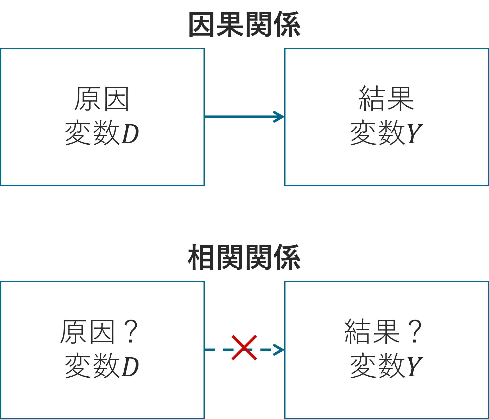
一般に、両者の関係を区別することは容易ではありません。
なぜなら、どちらの関係であったとしても、2つの変数は連動して動いて見えるからです。
実際は相関関係であるのに、それを因果関係と混同してしまうと、期待した結果を得られません。
例えば、学食の利用状況に関するデータを分析し、次のような相関関係が見つかったとします。
食堂で長時間滞在する学生ほど、1回あたりの売上が高い。
この結果を受けて、大学は「学食の売上を伸ばすには、学生の滞在時間を長くすればよい」と考え、学食にWi-Fiや電源を整備し、長居しやすい空間づくりに投資するかもしれません。
ところが、施策実施後、期待されたほど売上は伸びず、むしろ席が埋まりやすくなり、回転率が下がって全体の売上が減少してしまう可能性もあります。
このような結果を招く要因は、滞在時間が長い人は売上が高いという相関関係（単なる傾向）を、因果関係と勘違いしてしまったことです。
実際には、
- 友人と一緒に来る学生はもともと長居しがちで、複数人分まとめて会計するために単価が高くなっていた
- 昼休みなどの混雑時間帯を避けて来る学生が、空いている時間にゆっくり食べることができるため、滞在時間が長く購入金額が高めだった
- 空きコマの時間帯に来る学生が長居・高単価な傾向にあった
といったように、滞在時間の長さ自体が売上の原因ではなかった可能性があります。
したがって、相関があるからといって因果関係があるとは限らないことを理解しないと、本来の目的（売上向上）に反する結果を招くことすらあります。
より良い結果を得るために、お金や時間を効率的に使うには、因果関係に基づいた判断、つまり因果推論が必要となるのです。
相関と因果の違い
データからは「滞在時間が長い学生ほど、1回あたりの売上が高い」という相関関係が見いだせましたが、滞在時間を長くさせる施策は失敗に終わりました。
それは、滞在時間が売上の原因ではなかったからです。
それでは、相関関係は成り立っても因果関係は成り立たない要因とは何でしょうか？
この問いを考えるために、ここでは因果関係を見極めるための考え方について解説します。
相関が因果を示さない理由は、主に以下の3つです。
1. 偶然（たまたま）
2つの変数の動きが似ているのは、たまたまそうなっただけかもしれません。
たとえば、ある日「学食の売上が高く、同時に図書館の利用者も多かった」としても、それが直接関係しているとは限りません。偶然の一致である可能性は常に考慮する必要があります。
2. 疑似相関（交絡因子の存在）
2つの変数に直接の因果関係がなくても、共通の第三の要因が存在する場合、見かけ上の相関が生じることがあります。
これを疑似相関と呼びます。
例： > 滞在時間が長い学生ほど売上が高い
この状況は、次のようなメカニズムによって生じているかもしれません。
- 友人と来ているため、長居しやすく、注文も多くなっている
- 混雑を避けて空いている時間に来ており、時間的余裕から注文数も多い
- 昼休み後の空きコマに来る学生は、追加メニューを頼む余裕がある
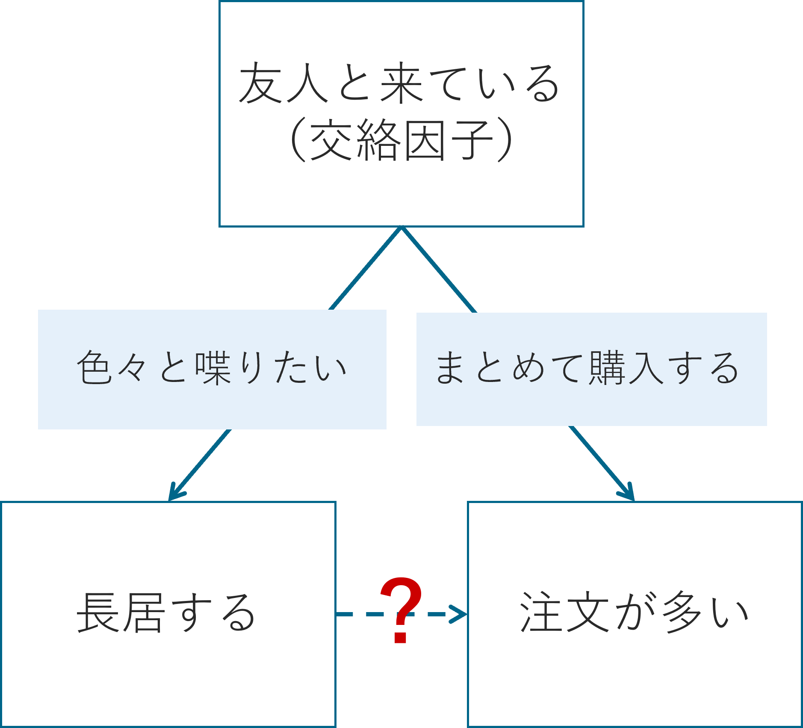
このように、滞在時間と売上の両方に影響を与える第三の変数のことを交絡因子と呼びます。
滞在時間と売上の間に相関が見つかったとしても、滞在時間そのものが原因とは限らないのです。
この交絡因子はデータとして取れない性質のもの（例えば、人々のやる気やその日の体調、友人との関係性など）であることも多いので、手元にデータとして存在する変数だけではなく、手元には存在しない変数も含めて、交絡因子が存在していないかどうかを疑ってみることが大切です。
3. 同時性（逆因果）
2つの変数がお互いに影響しあっている場合、因果の向きが曖昧になることがあります。
たとえば、以下のような2つの仮説を考えてみましょう。
- 長居しているから、飲み物やデザートを追加で購入し、売上が多くなる
- たくさん注文したから、食べきるのに時間がかかって結果的に長居になっている
どちらももっともらしく聞こえますが、因果の向きが逆になっています。
このように、一方が他方に影響しているのか、それとも逆なのか、あるいは両者が同時に影響しあっているのかを慎重に検討する必要があります。
このように、相関があっても因果関係があるとは限らず、誤った因果解釈をしてしまうと、思ったような効果が得られなかったり、逆に売上が下がってしまったりする可能性もあります。
したがって、学食の売上を伸ばすにはどうすればよいか？を真剣に考えるには、因果関係に基づいた判断が不可欠です。
そのために、まずは因果関係をしっかりと定義しましょう。